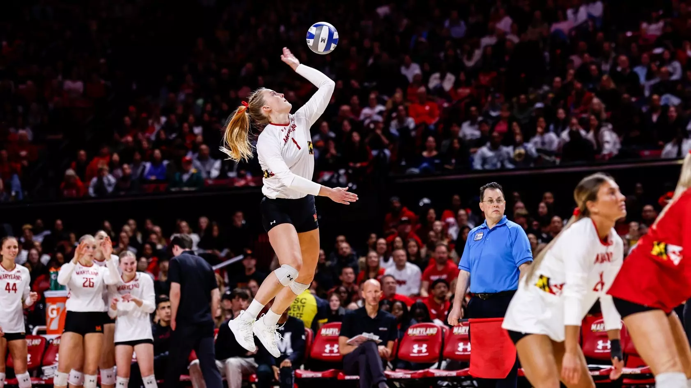
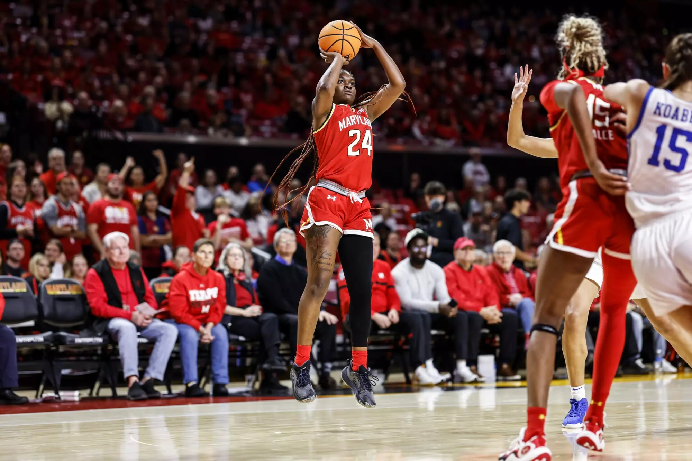
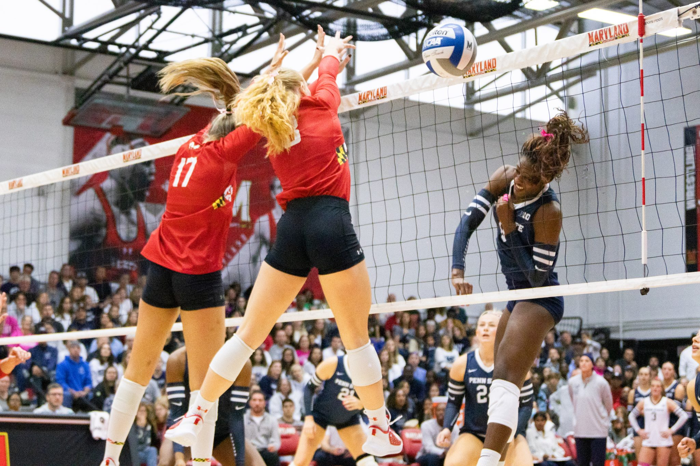
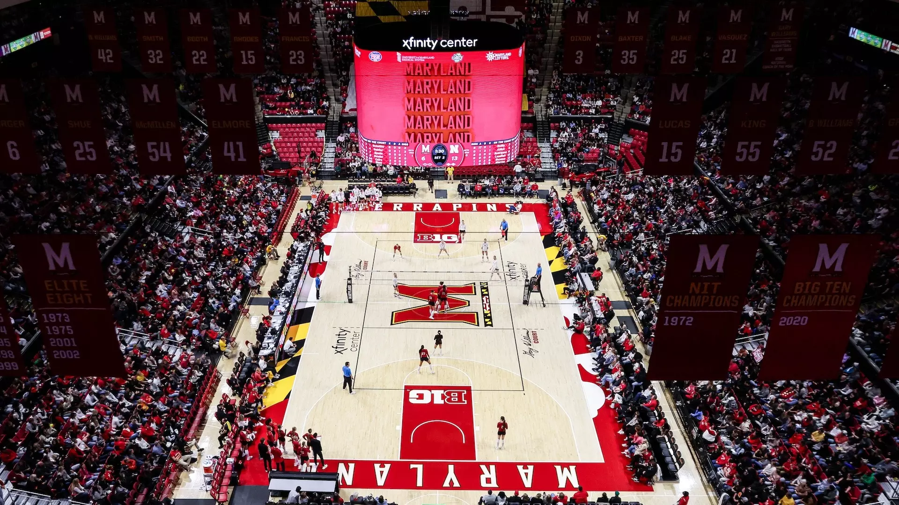
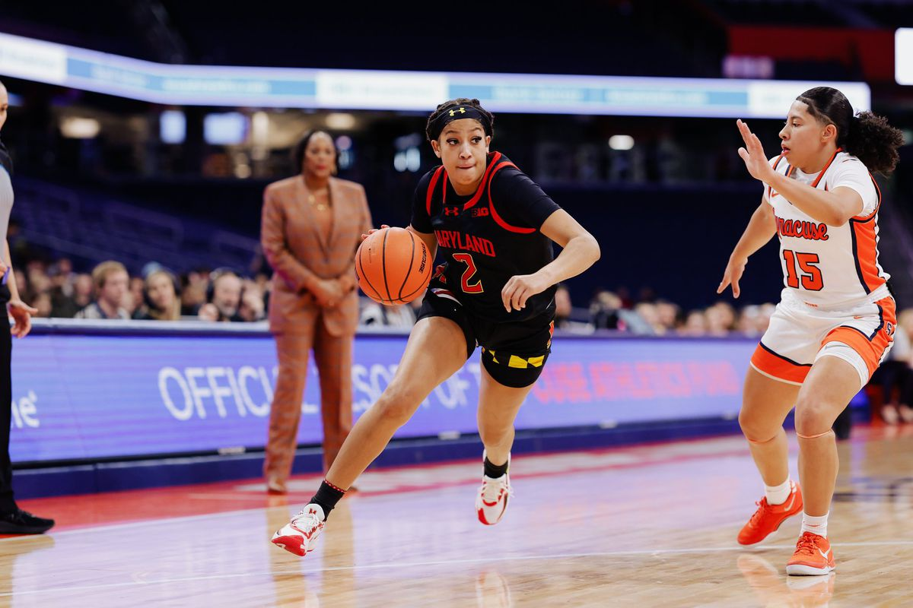
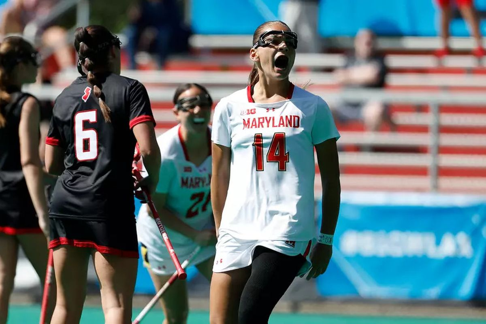

Work Samples
Below, you'll find featured examples of Dylan's published work covering University of Maryland sports:
Go back to home page

Maryland volleyball’s Samantha Schnitta remodeled her serves after a former All-American. Now, she’s one of the country’s best
Photo Courtesy: Maryland Athletics

Preview: No. 18 Maryland women’s basketball faces No. 11 Duke
Photo Courtesy: Maryland Athletics

Maryland volleyball defeated by Penn State in four sets
Photo Courtesy: The Diamondback

Maryland volleyball falls apart in four-set loss to No. 2 Nebraska
Photo Courtesy: Maryland Athletics

Kaylene Smikle continues dominance as Maryland rolls past Syracuse, 84-73
Photo Courtesy: Maryland Athletics

No. 7 Maryland women’s lacrosse rallies past Rutgers, 8-7
Photo Courtesy: Maryland Athletics